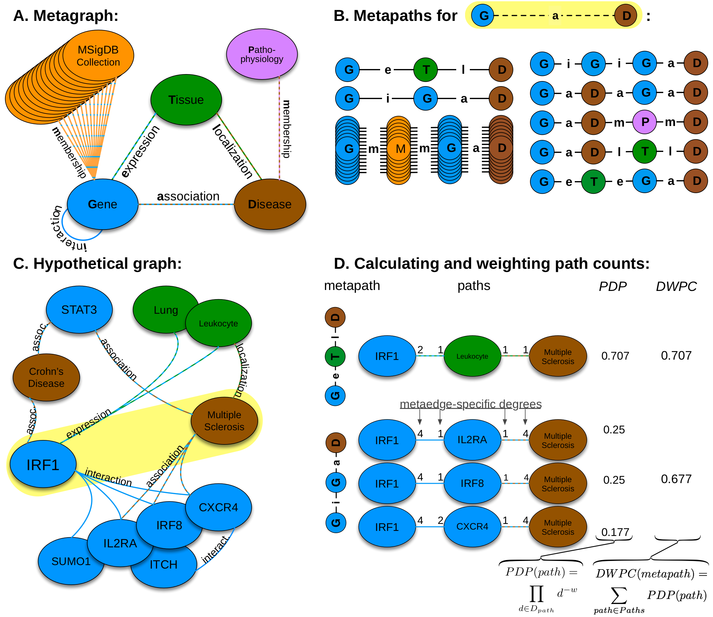

<section>
  <div class="section">
    <p>
      The goal of Heterogeneous Network Edge Prediction (HNEP) is to produce
      biologically-meaningful predictions by integrating multiple
      high-throughput data sources. The approach computes features describing
      the network topology connecting two nodes. These features are used as
      input to a machine learning method which predicts the probability that an
      edge exists. We adapted an alorithm originally developed for social
      network analysis called
      <a href="https://ieeexplore.ieee.org/document/5992571">PathPredict</a>.
      Our
      <a
        href="https://journals.plos.org/ploscompbiol/article?id=10.1371/journal.pcbi.1004259"
        >extensions to this method</a
      >
      focused on scalability and performance.
    </p>
    <h3>Methodology of metapath-based edge prediction</h3>
    <p>
      Here we show the process of calculating features that describe the network
      topology between two nodes. Features are used as predictors for subsequent
      modeling.
    </p>
    <figure>
      
    </figure>
    <ol type="A">
      <li>
        We constructed the network according to a schema, called a metagraph,
        which is composed of metanodes (node types) and metaedges (edge types).
      </li>
      <li>
        The network topology connecting a gene and disease node is measured
        along metapaths (types of paths). Starting on Gene and ending on
        Disease, all metapaths length three or less are computed by traversing
        the metagraph.
      </li>
      <li>
        A hypothetical graph subset showing select nodes and edges surrounding
        <i>IRF1</i> and multiple sclerosis. To characterize this relationship,
        features are computed that measure the prevalence of a specific metapath
        between <i>IRF1</i> and multiple sclerosis.
      </li>
      <li>
        Two features (for the <i>GeTlD</i> and <i>GiGaD</i> metapaths) are
        calculated to describe the relationship between <i>IRF1</i> and multiple
        sclerosis. The metric underlying the features is degree-weighted path
        count (<i>DWPC</i>). First, for the specified metapath, all paths are
        extracted from the network. Next, each path receives a path-degree
        product measuring its specificity (calculated from node-degrees along
        the path, <i>D<sub>path</sub></i
        >). This step requires a damping exponent (here <i>w</i> = 0.5), which
        adjusts how severely high-degree paths are downweighted. Finally, the
        path-degree products are summed to produce the <i>DWPC</i>.
      </li>
    </ol>
  </div>
</section>
